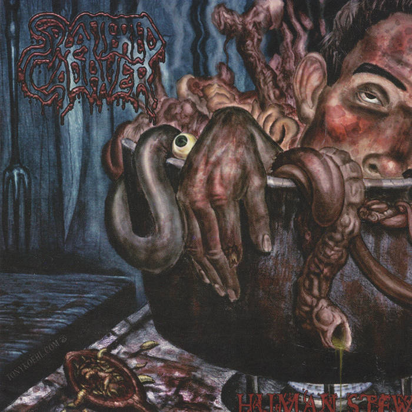

Human Stew

Descripiton:
A stew made from human flesh and organs.
Ingredients:
- 100g flesh
- 50g human heart
- 1L blood
- 1m of intestines
- 1-2 eyes
Steps:
- Put the blood till' is boiling
- Add the flesh and wait 10 minutes
- Add the heart and intestines
- Wait 30 minutes and is good for serving
- For each serve put an eyeball